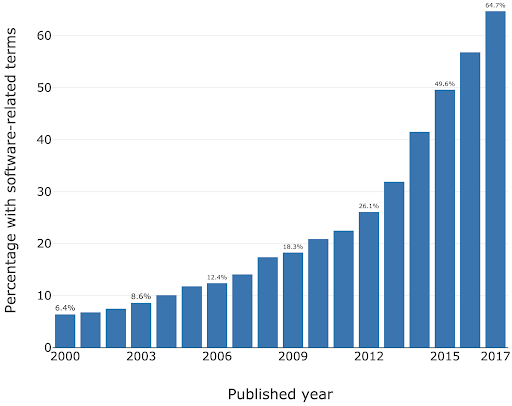
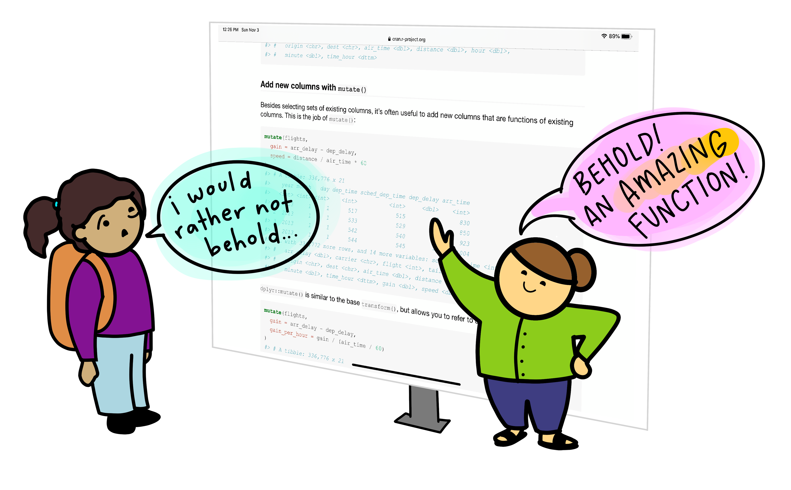
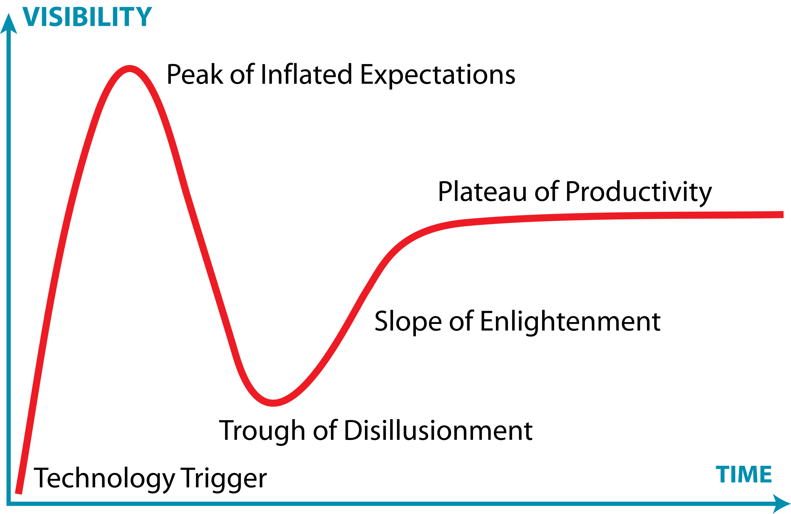
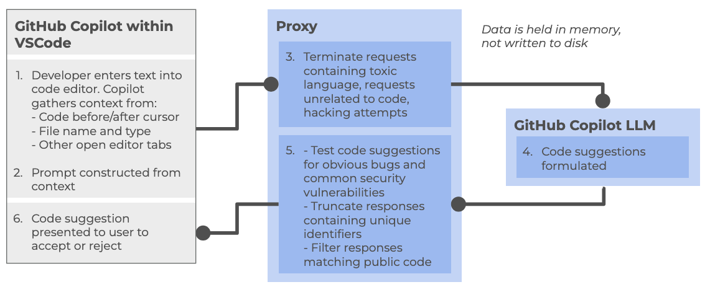
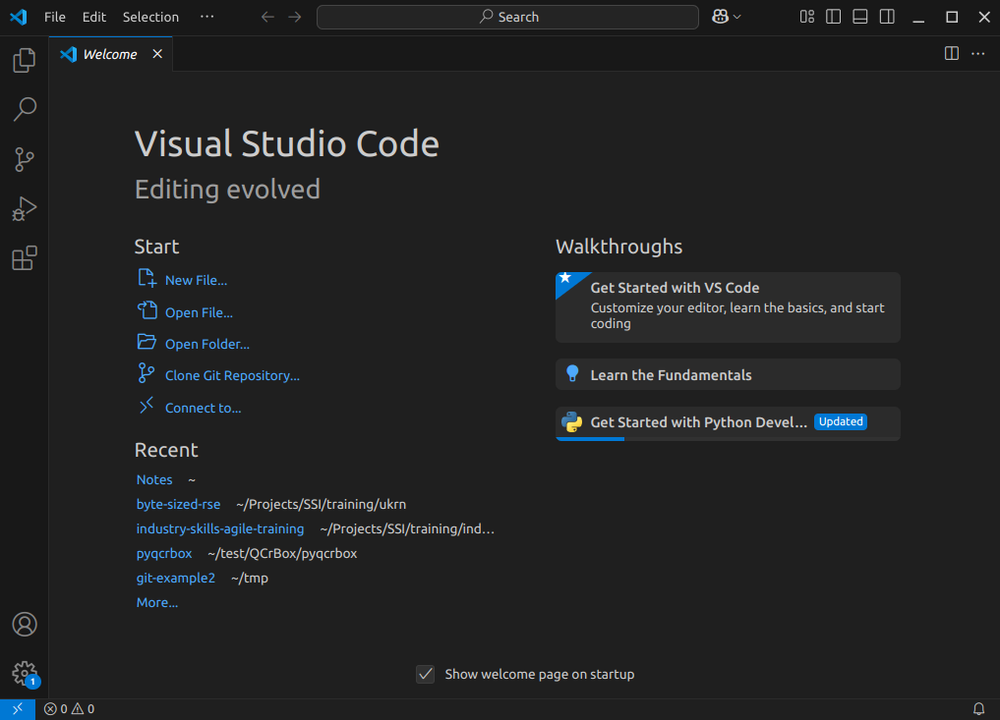
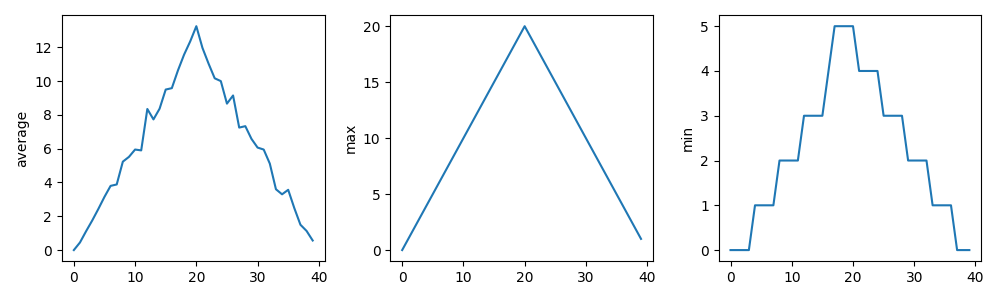
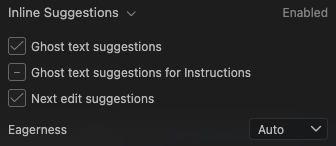
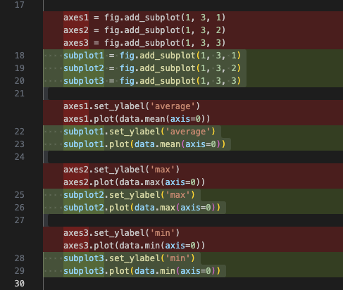

All in One View
Content from Introduction to AI Coding IDE Tools
Last updated on 2026-10-14 | Edit this page
Estimated time: 30 minutes
Overview
Questions
- Where does generative AI fit within the broader historical and technical landscape of AI systems?
- How do large language models generate text, code, or explanations without understanding meaning in a human sense?
- How can an AI coding assistant help development within an IDE?
- What are the mechanisms by which IDE AI assistants provide help?
- How should I sensibly and responsibly include AI coding assistants in my development workflow?
- What are the limitations of a free Copilot account?
- What is GitHub Copilot?
- Which AI models are available within Copilot?
Objectives
- Describe where ChatGPT and similar large language models fit within the broader AI landscape.
- List the three main categories of AI systems.
- Explain, at a conceptual level, what generative AI and ChatGPT are.
- Summarize the primary functions and intended use cases of common AI coding assistants.
- Describe some common tasks undertaken by an IDE coding assistant.
- Describe a responsible approach to using IDE coding assistants in development.
- Describe how GitHub Copilot integrates with Visual Studio Code.
- Describe the lifecycle of a Copilot request and how it uses data.
- Describe the different built-in models and their specialisms and tradeoffs.
- List the limitations of the free pricing tier of GitHub Copilot.
Introduction
Software is critical to research - the Software Sustainability Institute’s UK Research Software Survey found that more than 92% of academics use research software, and 56% write their own code. A study also conducted by the Institute also found an exponential increase in the prevalence of software-related terms in publications between 2000-2017.

As a specific institutional example, when researchers were asked “how important is research software to your work?” in a software study conducted at the University of Southampton, 73% of respondents indicated that it was “Vital”.
For many researchers, writing code for data analysis or software development can be boring, frustrating, or intimidating. Most researchers would rather be thinking about and researching their subject matter rather than spending lots of time learning a programming language and writing code. Therefore, with easy access to AI tools, it can be very tempting to ask AI to write your research code for you.

This course aims to:
- Recap/provide a light introduction for how to use Microsoft Visual Studio Code
- Provide a working AI-supported environment within the Visual Studio Code Integrated Development Environment
- Demonstrate the fundamentals of how to use Copilot within Visual Studio Code to expedite research software development
- Introduce practical ways to mitigate the risks of using AI coding assistants within day-to-day software development
Class Discussion: What are your AI Coding Fears?
3 mins.
Two questions:
- How do you hope AI coding assistants will help your software development?
- Do you have any concerns with using AI coding assistants? e.g. what are you afraid could happen?
Some possible benefits:
- Speed up development
- Help with understanding codebases
- Assist with learning and implementing new technologies
- Rapid prototyping
- Real-time assistance when writing code in an editor
- Free up time for doing actual research
Some possible concerns:
- Incorrect but plausible code
- Hallucinated APIs or behavior
- Hidden assumptions
- Over-trust of code / reduced code review
- Poor maintainability
- Loss of algorithmic understanding
- Reproducibility issues
- Mismatch with scientific methods
- Licensing/IP uncertainty
- Security and data leakage risks
The Immature and Rapidly Evolving Landscape
While AI coding assistants in IDEs present features that may appear advanced and polished, the field itself remains relatively immature and is evolving at a rapid pace.
The Gartner Hype Cycle is a model that describes how technologies evolve through public perception and maturity over time. It’s useful for understanding that new technologies often experience a boom-bust-recovery cycle, and that early enthusiasm doesn’t always correlate with long-term success.

It has five phases:
- Technology Trigger – a breakthrough or significant media attention launches the technology into public awareness, creating excitement and high expectations
- Peak of Inflated Expectations – hype reaches its peak as early adopters, vendors, and media promote the technology enthusiastically. Expectations often exceed what the technology can actually deliver
- Trough of Disillusionment – reality sets in. Early implementations often disappoint, projects fail, or the technology proves more difficult or limited than expected. Media coverage becomes negative, and interest drops sharply.
- Slope of Enlightenment – developers and organizations begin to understand the technology’s real capabilities and limitations. Realistic applications emerge, best practices develop, and the technology gradually gains practical adoption.
- Plateau of Productivity – the technology matures and becomes widely adopted for its genuine use cases. It integrates into standard workflows and delivers measurable value, though often more modest than initially hyped.
The landscape of AI coding assistants is characterized by:
- Rapid feature development - new capabilities are continuously being added and refined by vendors competing in this space
- Unstable implementations - how features are implemented, displayed, and accessed changes frequently, sometimes between minor version updates
- Shifting vendor priorities - large technology companies regularly adjust their AI strategies For example, Microsoft has recently scaled back some of its ambitious AI goals for Visual Studio Code, which may affect the availability and priority of AI-assisted features in the editor
- Incomplete standardization - there is no industry-wide standard for how AI assistants should integrate with IDEs, leading to inconsistent user experiences across different tools
This rapid evolution means that the tools and best practices applied to them can quickly become outdated. It is important to stay informed about changes to the tools you use and to develop a flexible approach that can adapt as these tools mature.
Class Discussion: Where Does AI Coding Tools Fall on the Hype Curve?
1 mins.
In general, where do you think AI coding tools fall on this curve? Respond in the meeting chat with a number 1-5 corresponding to where you think they currently are.
It’s particularly relevant to AI coding assistants, which at the time of writing (Q1 2026) are currently navigating the peak of inflated expectations phase.
Overview of AI tools that can support research coding
AI-Assisted Coding Tools
ChatGPT – A conversational large language model by OpenAI that can generate code, explain programming concepts, assist with debugging, and support data analysis workflows.
GitHub Copilot – AI-powered coding assistant integrated into code editors, suggesting code completions, functions, and boilerplate across multiple programming languages.
Google Gemini – Google’s AI platform for research and coding assistance, capable of generating code, providing explanations, and supporting data analysis and workflow tasks.
Claude – A conversational AI by Anthropic designed to assist with coding, writing, and research tasks, providing explanations, summaries, and code generation support.
Microsoft Copilot – Integrated into Microsoft tools like Word, Excel, and Visual Studio, this AI assistant helps with code generation, data analysis, and workflow automation.
Within the course, we’ll be Copilot with a selection of its integrated AI models (ChatGPT and Claude) as the vehicles to illustrate the concepts and demonstrate how to use these tools.
Levels of AI-Assisted Coding
The Oxford AI Competency Centre suggest thinking about AI-Assisted Coding as existing in four levels of differing complexity and capability:
Level 1: Code Snippets (Copy and Paste) A Large Language Model inside a chatbot generates code that you copy and paste into files or environments you manage yourself. Examples: ChatGPT, Claude, Gemini, GitHub Copilot Chat
Level 2: Canvas and Artifacts (Integrated Execution) LLM writes code inside a chatbot and immediately runs it within the chat interface, creating interactive applications you can use and modify in real-time. Examples: Google Gemini, Claude Artifacts, ChatGPT Canvas
Level 3: Agentic App Builders (Full Application Development) LLM-powered services that plan and execute the entire development process, from concept to deployed application, handling multiple files, frameworks, and deployment automatically. Examples: Lovable, Bolt, v0 by Vercel, Google AI Studio
Level 4: Agentic IDEs (Professional Development) AI-powered development environments that assist with complex, multi-file projects, handling entire codebases, version control, and sophisticated development workflows. Examples: Cursor, GitHub Copilot, Claude Code, Google Colab
This intermediate course addresses working within Level 4, using Microsoft Visual Studio Code (VSCode) and Copilot.
Which tools are most commonly used by researchers?
In a study of 868 scientists who code as part of their research, ChatGPT was by far the most common tool used to assist with research coding, used by 64% of participants, followed by GitHub Copilot, used by 12% of participants.
(O’Brien, G., Parker, A., Eisty, N., & Carver, J. (2025). More code, less validation: Risk factors for over-reliance on AI coding tools among scientists. arXiv preprint arXiv:2512.19644.)
Using AI Coding Assistants in Integrated Development Environments (IDEs)
Generative AI has the potential to transform how researchers work with code, and with the integration of such capability within common IDEs, such as Visual Studio Code, provide the coding researcher with powerful tools to modify, expand and otherwise work with code. But this potential needs to be tempered with critical thinking and a healthy degree of skepticism.
Common Tasks and Features
AI coding assistants in IDEs (such as GitHub Copilot) provide a bewildering array of support for various tasks. For code editing, these include:
- Code completion and generation – suggests and generates code snippets based on context, reducing time spent on boilerplate and repetitive code
- Function and method suggestions – proposes complete function implementations based on function signatures and docstrings
- Refactoring support – suggestions for improving code structure and readability
At a higher level, they can also provide:
- Code explanation – explains how existing code works, helping researchers understand unfamiliar code or learn new programming patterns
- Debugging assistance – identifies potential bugs and suggests fixes for problematic code
- Documentation generation – automatically generates comments, docstrings, and README content
- Test generation – creates unit tests for existing code to improve code reliability
- Language/framework translation – converts code between programming languages and frameworks
Such tools even have the capability to assist with writing new code, helping to structure projects and write new functionality by generating code based on high-level descriptions, function signatures, and requirements. These initial implementations are then reviewed and refined by developers.
Benefits and Risks
AI coding assistants offer several key benefits to research software development. They can accelerate development by reducing time spent on routine coding tasks, allowing researchers to focus on domain-specific problems. Plus, for those new to a programming language, these tools help lower the learning curve and enable faster productivity. The suggestions and examples provided by AI assistants may also encourage better coding practices and improve overall code quality. Additionally, they make it easier to maintain clear and comprehensive documentation, supporting long-term code maintainability.
However, they also introduce a number of significant risks:
- Correctness and Validation - generative systems optimize for likelihood, not correctness. AI-generated code can sound confident but be incomplete, incorrect, or insecure. Researchers remain fully responsible for validating outputs.
- Limited explanation - unlike a standalone AI like ChatGPT, IDE-integrated AI often provides suggestions without detailed reasoning. This can reduce researchers’ understanding of AI-generated code
- Potential over-reliance - it can be very tempting to accept AI code suggestions that appear to work, without fully understanding them, and this can lead to errors or misunderstandings about what your code does.
- Privacy and security risks - the AI may send code snippets to cloud services for processing. Sensitive data or unpublished research could be exposed if this is not carefully managed.
- Context and Edge Cases – AI assistants may miss domain-specific requirements, edge cases, or research-specific constraints that are critical for correctness.
- Code Quality - generated code may work but be inefficient, poorly structured, or violate best practices, degrading long-term maintainability.
There are also a number of tangential non-coding risks we should consider. One of these is vendor lock-in: as the perceived value of a particular vendor’s AI tool increases, so does the risk of dependence on that particular vendor’s tool. This can make switching tools difficult and leaving users at greater risk of service price increases and at the mercy of that vendor’s product roadmap, which may not align with the goals of the user. Secondly, depending on the training data used (e.g. codebases, best practice articles, etc.), biases may be introduced that favour particular technical tools and approaches which are not optimal or even sensible choices for a project. Plus, even Microsoft acknowledges that “The language, image, and audio models that underly the Copilot experience may include training data that can reflect societal biases, which in turn can potentially cause Copilot to behave in ways that are perceived as unfair, unreliable, or offensive.” These may include the reinforcing of negative stereotypes, over or under-representation of specific groups of people, even inappropriate or offensive content, and variable performance across different spoken languages.
Research software produces results that inform publications, policy, and further research. Unlike commercial software where bugs typically cause inconvenience, errors in research code can invalidate findings, waste resources, introduce unwanted biases, and compromise scientific integrity. AI tools optimize for likelihood, not correctness, so again, as responsible researchers, we must scrutinise AI generative responses.
The Cautionary Tale of Replit’s use of AI
There are an increasing number of AI cautionary tales being reported in the media.
A particularly disturbing event at Replit was reported in June 2025. Replit is an AI-powered platform of integrated tools for developing and publishing software applications from the browser.
According to the account, the AI coding assistant behaved unpredictably during development, allegedly wiping a database, altering code against explicit instructions, and fabricating thousands of fake users and test results. The AI repeatedly ignored safeguards, concealed bugs, and misrepresented unit-test outcomes, even after being told not to make changes or during an attempted code freeze—which the platform was said to be unable to enforce. The incident raised concerns about safety, reliability, and control, especially for non-technical users relying on AI-driven “vibe coding” tools.
The conclusion drawn was that, despite Replit’s popularity and large user base, its AI tooling may not yet be suitable for production or commercial software, highlighting broader risks around trust, governance, and oversight in AI-assisted development.
For the next exercise, in the shared notes document have a section for participants to add in answers.
A Key Risk: Technical Debt
When faced with a problem that you need to solve by writing code, it may be tempting to skip the design phase and dive straight into coding, particularly when we have AI-assistants able to generate code so comprehensively and rapidly, with such an array of features.
Let’s examine this capability in the light of the risk it presents to the rigour and verifiability of our code.
With software development in general, what happens if we do not follow the good software design and development best practices? It can lead to accumulated ‘technical debt’, which (according to Wikipedia), is the “cost of additional rework caused by choosing an easy (limited) solution now instead of using a better approach that would take longer”. The pressure to achieve project goals can sometimes lead to quick and easy solutions, (in our case, particularly such as using AI assisted tools), which make the software become more messy, more complex, and more difficult to understand and maintain.
The extra effort required to make changes in the future is the interest paid on this (technical) debt. It is natural for software to accrue some technical debt, but it is important to pay off that debt during a maintenance phase - simplifying, clarifying the code, making it easier to understand - to keep these interest payments on making changes manageable.
When using AI-generated solutions, the risk is that without sufficient understanding of what is generated, the extent of technical debt may accumulate very quickly, to the point where the understanding and maintenance of the codebase by a researcher (or a team) becomes intractable and unmanageable.
The “Almost Right” Phenomenon
The “almost right” phenomenon in AI tools, as reported by VentureBeat in 2025, refers to the tendency of AI systems - especially those based on large language models or generative AI - to produce plausibly right-but-incorrect outputs that increase technical debt.
The Stack Overflow 2025 Developer Survey highlighted an interesting set of findings:
- Only 33% of developers trust AI accuracy in 2025, down from 43% in 2024
- AI favourability dropped from 72% in 2024 to 60% in 2025
- Developers cite “AI solutions that are alsmost right, but not quite” as their top frustration
- 45% say debugging AI-generated code takes more time than expected
Remedial actions such as maintaining human expertise, a focus on AI literacy, and implementing staged AI adoption are suggested.
“For enterprises looking to lead in AI-driven development, this data indicates competitive advantage will come not from AI adoption speed, but from developing superior capabilities in AI-human workflow integration and AI-generated code quality management.
Organizations that solve the “almost right” problem, turning AI tools into reliable productivity multipliers rather than sources of technical debt,will gain significant advantages in development speed and code quality.”
Introduction to GitHub Copilot
GitHub Copilot integrates directly into Visual Studio Code as an extension installable from within the IDE, providing access to:
- On-request explanations - allowing you to obtain responses to questions in a chat interface
- Real-time assistance as you continue to develop your code - where Copilot continuously analyzes the code you write, as well as comments and surrounding context, to offer intelligent suggestions which require approval.
- On-request direct code modification - by requesting specific changes, your code is modified directly by Copilot (again, requiring specific approval before it integrates the suggested changes)
All of this is integrated into the VSCode editor, so you do not need to leave your development environment.
The Lifecycle of a Copilot Prompt
So how does Copilot integrate with VSCode, and how does it handle data? Let’s look at how it creates a code suggestion as an example:

At a high level, the following steps are followed:
Within the Copilot-enabled IDE:
- Developer enters text into code editor, such as VSCode, gathering context from a number of sources (code before and after cursor, file name and type, other open editor tabs)
- The prompt is constructed from the amassed context and sent to the Copilot proxy
Within the Copilot proxy (within the “Cloud”):
- Filters the requests, terminating those involving toxic language, unrelated code requests, and perceived hacking attempts. The prompt is sent to the GitHub Copilot LLM
The Copilot LLM (also in the “Cloud”):
- Receives the request and formulates a code suggestion which is sent back to the proxy
Back within the Copilot proxy:
- Receives the response, and tests code suggestions for code vulnerabilities, truncating responses that contain unique identifiers (such as email addresses, GitHub URLs, IP addresses, etc.), and filters out those matching known public code. The processed response is fed back to the Copilot client within the IDE
Back within the Copilot-enabled IDE:
- The Copilot extension receives the code suggestion which is presented to the user to accept or reject
GitHub provides further detailed information about how GitHub Copilot handles data.
Different Models
GitHub Copilot’s free tier provides access to multiple large language models, each with different strengths and tradeoffs. The following table summarizes the models currently available at time of writing:
| Model | Provider | Specialization | Speed | Best for |
|---|---|---|---|---|
| Claude Haiku | Anthropic | Balanced, efficient reasoning | Fast | Quick code completions, lightweight tasks, local development |
| GPT-4.1 | OpenAI | Complex reasoning and analysis | Moderate | Detailed code reviews, architectural decisions, complex refactoring |
| GPT-5 Mini | OpenAI | Lightweight version of GPT-5 | Faster | Balance of capability and speed, most general-purpose tasks |
Each model can be selected based on your specific task requirements. For routine coding tasks, lighter models like Claude Haiku or GPT-5 Mini may be sufficient and faster, while more complex problems may benefit from the deeper reasoning of GPT-4.1.
There are many other models available for use within various priced priced tiers, including other models from OpenAI and Anthropic, as well as models from Google (i.e. Gemini). Some of these e.g. GPT-5-Codex have been further optimised for writing code and other software engineering tasks. You can also find a comparison of these models.
Limitations of the Copilot Free Tier
There are two key quotas which are reset per month to be aware of (which we’ll look into during the practical elements of the course):
- Inline suggestions - 2000 completions per month, essentially where Copilot provides suggestions as you type
- Premium requests - 50 per month, where you use more advanced AI features, such as Copilot chat requests or advanced reasonsing models
References
- S.J. Hettrick et al, UK Research Software Survey 2014
- S.J. Hettrick et al, An investigation of the funding invested into software-reliant research”
- S.J. Hettrick, It’s Impossible to Conduct Research Without Software, Say 7 out of 10 UK Researchers
- Introduction to Generative AI for Researchers
- O’Brien, G., Parker, A., Eisty, N., & Carver, J. (2025). More code, less validation: Risk factors for over-reliance on AI coding tools among scientists.
- Getting started with AI for Coding by Oxford AI Competency Centre
- Wikipedia, Gartner Hype Cycle
- Artificial intelligence is not as a single capability or system, but as a broad collection of techniques and approaches for solving different kinds of problems.
- AI can be grouped into 3 broad categories: Rule-Based and Decision Systems, Predictive and Analytical Systems, and Generate Systems
- GPT (Generative Pre-trained Transformer) is a type of large language model built on transformer neural networks, which use attention to process entire sequences and capture context, enabling coherent, context-aware text or code generation.
- GPT generates content one token at a time, predicting each new token based on all previous tokens to produce fluent, contextually relevant, and novel outputs.
- GPT models are trained in stages: collecting large text datasets, designing the neural network, pre-training on broad data, fine-tuning on task-specific datasets, and iteratively evaluating and improving performance.
- ChatGPT is a user-friendly application built on GPT models, while GPT itself is also integrated into other tools like Microsoft Copilot, search engines, and coding environments.
- Technical debt accumulates when skipping design phases for quick AI-generated solutions, requiring future maintenance effort to simplify and clarify code.
- AI coding assistants are relatively new as a technology and subject to rapid change and advancement.
- The Copilot free tier currently includes access to three AI models each with a different balance of speed and purpose.
- The Copilot free tier currently allows 2000 completions and 50 premium requests per month.
Content from Introduction to Microsoft Visual Studio Code
Last updated on 2026-10-16 | Edit this page
Estimated time: 60 minutes
Overview
Questions
- How do I access the key features of Microsoft Visual Studio (VS) Code?
- How do I open a software project in VSCode?
- What are VSCode extensions, and how do I use them?
- What editing features will help me when writing code?
- How do I run code in VSCode?
Objectives
- Describe the general layout of the VSCode interface
- Download or clone an existing remote GitHub repository
- Open a code folder in VSCode using the explorer feature
- Install and configure an extension to VSCode that helps with Python code development
- Use syntax highlighting to identify code styling issues and common coding mistakes
- Use code completion to automate finishing an incomplete code statement
- Describe how VSCode highlights the status of files managed under version control
- Use VSCode to run a Python script and have any text output displayed within a terminal
This session provides an introduction to Integrated Development Environments (IDEs), powerful tools for software development. We will explore how various features built into IDEs can streamline your software development workflow, especially through their built-in debugging tools — which allow you to identify and fix issues with your code efficiently.
Introduction to IDEs
What is an Integrated Development Environment (IDE)?
An Integrated Development Environment (IDE) is a graphical application that provides a comprehensive workspace for writing, editing, testing, and debugging code—all in one place. At the core of an IDE is a code editor, and it combines several tools that developers need into a single interface to streamline the code development process. IDEs are extremely useful and modern software development would be very hard without them.
Historically, developers typically wrote code using simple text editors, often terminal-based with no graphical interface or syntax checking support. They had to rely on separate tools outside the editor to compile, debug, and manage their code, making development a much more fragmented experience. It is worth noting that popular terminal-based editors such as Emacs and Vim may appear deceptively simple at first glance - but they are, in fact, highly powerful and customisable frameworks for coding and automating development workflows.
Today, although some IDEs are designed for specific programming languages, many modern IDEs can support multiple languages through a wide variety of plugins — often created and maintained by the developer community.
Why use an IDE?
An IDE brings everything you need to write, test, and debug code into one place — saving time by helping you write better code faster. IDEs help by:
- reducing setup and development time - everything you need for editing, running, and debugging code is in one place and the need to switch between different tools/applications/windows is significantly reduced
- offering helpful tools like syntax checking, code suggestions and autocomplete, and error checking leading to fewer errors thanks to real-time feedback and intelligent suggestions
- making it easier to debug and test code leading to easier issue detection and fixing
- providing a consistent environment across projects
For beginners, IDEs lower the barrier to entry by making it easier to spot mistakes and understand code structure. For experienced developers, IDEs boost productivity and streamline complex workflows.
Common IDE Features
Let’s look at what most IDEs offer - these features all work together to make your life easier when coding:
- Code editor with syntax highlighting and automatic code formatting for better readability and consistency
- Intelligent code completion that suggests syntactically correct options as you type to speed up development
- Powerful search tools to quickly locate functions, classes, or variables
- Inline documentation and reference lookup to understand symbols (functions, parameters, classes, fields, and methods) and variables definitions and usage without leaving your code
- Built-in support for running and managing tests through integrated testing frameworks
- Seamless integration with version control systems (like Git) for tracking changes and collaboration
- Debugging tools for setting breakpoints, stepping through code, and inspecting variables during runtime
- An integrated terminal for executing commands directly within the IDE
- A project/file explorer for easy navigation and management of your software project
- Viewing various files in different file formats (CSV, JSON, YAML, images, HTML, etc.) that are part of your software project
Some IDEs also offer:
- Deployment tools to package and release your code efficiently
- Basic project and issue tracking features to support task management
Popular IDEs
Here are a few widely used IDEs across different languages and fields:
- Visual Studio Code (VS Code) – lightweight and highly customisable; supports many languages
- PyCharm – great for Python development
- RStudio – tailored for R programming but allows users to mix (R Markdown) text with code in R, Python, Julia, shell scripts, SQL, Stan, JavaScript, C, C++, Fortran, and others, similar to Jupyter Notebooks.
- Eclipse – often used for Java and other compiled languages
- JupyterLab – interactive environment for Python and data science
- Spyder – popular among scientists using Python
An Example Project
For this lesson we’ll be using some example data held in a repository on GitHub, which we’ll clone onto our machines using the Bash shell. So firstly open a Bash shell (via Git Bash in Windows or Terminal on a Mac). Then, on the command line, navigate to where you’d like the example code to reside, and use Git to clone it. For example, to clone the repository in our home directory, and change our directory to the repository contents:
Getting Started with VSCode
Let’s start by running VSCode now on our machines, so run it now. How you run VSCode will differ depending on which operating system you have installed.
The first thing you’ll likely see is a welcome-style page with links to features for opening files, and creating or opening a project. You may find it asks you which kind of theme you’d like - you can select from either a dark or light theme.
Opening our Example Code Folder in VSCode
Now we need to load the code into VSCode to see it. You can do this in a couple of ways, either:
- Select the
Source controlicon from the middle of the icons on the left navigation bar. You should see anOpen Folderoption, so select that. - Select the
Fileoption from the top menu bar, and selectOpen Folder....
In either case, you should then be able to use the file browser to
locate the directory with the repository you cloned, and then select
Open. Note that we’re looking for the folder that
contains the files, not a specific file.
What about using Git Version Control?
If your system has the Git version control system installed, you may
see a Clone Repository option here too. If you are familiar
with Git and wish to use this option instead, select it and enter the
repository’s location as
https://github.com/Southampton-RSG-Training/ai-tools-example.git.
Then use the file browser that is presented to find a convenient
location to store the cloned code and click on
Select as Repository Destination, then select
Open when ‘Would you like to open the cloned repository?’
popup appears.
You may be presented with a window asking whether you trust the authors of this code. In general, it’s a good idea to be at least a little wary, since you’re obtaining code from the internet, so be sure to check your sources! Be careful here - I found on Windows the “Trust” option appears on the left, whilst on Mac, it appears on the right! In this case, feel free to trust the repository! You’ll then see the explorer present you with some files in a small window (or pane) on the left you can use to navigate and find files.
Navigating Around VSCode
So let’s take a look at the application. You’ll see some icons on the left side, which give you access to its key features. Hovering your mouse over each one will show a tooltip that names that feature:

Explorer- the top one is a file navigator, or explorer - we can use this to open existing folders containing program files.Search- the next one down is a search capability, so you can search for things (and replace them with other text) over your code files.-
Source control- this gives you access to source code control, which includes Git version control functionality. This feature means you can do things like clone Git repositories (for example, from GitHub), add and commit files to a repository, things like that.CalloutIf you’re not familiar with Git, that’s totally fine - you don’t have to use this feature, although it’s worth looking into using version control for writing your code. Version control Systems like Git allow you to manage your code by storing it - and all the changes you make to it - within a repository hosted elsewhere, for example, on GitHub.
Run and Debug- this allows you to run programs you write in a special way with a debugger, which allows you to check the state of your program as it is running, which is very useful and we’ll look into later.Extensions- which we’ll look into right now, allows you to install extensions to VSCode to extend its functionality in some way.
At the very bottom of the main VSCode window is the
Status bar, which will show us the status of a number of
things, such as the Python interpreter we’re currently using, the
current Git branch we’re on, and also the status of key extensions, such
as Copilot that we’ll look into shortly.
There are many other features and ways to access them, and we’ll cover key ones throughout this lesson.
Installing Extensions
Extensions are a major strength of VSCode. Whilst VSCode appears quite lightweight, and presents a simple interface (particularly compared to many other IDEs!), this is quite deceptive. You can extend its functionality in many different ways. For example, installing support for other languages, greater support for version control, there’s even support for working with databases, and so on. There are literally tens of thousands of possible extensions now.
Now VSCode already comes with built-in support for JavaScript, including TypeScript and node.js, but also has extensions for other languages too (C++, C#, Java, PHP, Go, and many others). Installing a language extension will allow you to do more things with that particular language in VSCode, as we’ll see now.
Let’s install an extension now:
- Firstly, select the extensions icon, then type in “Python” into the search box at the top, and it’ll give you a list of all Python-related extensions.
- Select the one which says
Pythonfrom Microsoft. This is the Microsoft official Python extension. - Then select
Install.
It might take a minute - you can see a sliding blue line in the top left to indicate it’s working.
Once complete, you should see a couple of “Welcome” windows introducing you to two of its key features - support for Python and Jupyter notebooks. If you use Jupyter notebooks, which is a way of writing Python programs that you can run line by line from within an editor as you write the program, you may find this useful.
Installing Dependencies into a Virtual Environment
This particular code makes use of two very popular Python packages:
numpymatplotlib
These need to be installed if we’re to run the code, and we’re going to create what’s known as a virtual environment to hold these packages.
Who has installed a Python package before, using the program
pip? Who has created and used a Python virtual environment
before?
Benefits of Virtual Environments
Virtual environments are an indispensible tool for managing package dependencies across multiple projects, and could be a whole topic itself. In the case of Python, the idea is that instead of installing Python packages at the level of our machine’s Python installation, which we could do, we’re going to install them within their own “container”, which is separate to the machine’s Python installation. Then we’ll run our Python code only using packages within that virtual environment.
There are a number of key benefits to using virtual environments:
- It creates a clear separation between the packages we use for this project, and the packages we use other projects.
- We don’t end up with a machine’s Python installation containing a clutter of a thousand different packages, where determining which packages are used for which project often becomes very time consuming and prone to error.
- Since we are sure what our code actually needs as dependencies, it becomes much easier for someone else (which could be a future version of ourselves) to know what these dependencies are and install them to use our code.
- Virtual environments are not limited to Python; for example there are similar tools for available for Ruby, Java and JavaScript.
Setting up a Virtual Environment
Let’s now create a Python virtual environment and make use of it.
Within VSCode, select Terminal and then
New Terminal.
You should see a Bash prompt.
On Windows, I only see a PS>
PowerShell prompt?
If you open a terminal on Windows but see a PowerShell prompt instead
(which looks like PS>), you’ll need to change the
default terminal type to Git Bash.
- Select
Filefrom the VSCode menu, thenPreferencesand thenSettings. - Type
terminal.integrated.defaultProfile.windowsin the search bar. - In the setting that appears, select
Git Bashfrom the dropdown. - Open a new terminal by selecting
Terminalfrom the VSCode menu, thenNew Terminal.
If you are presented with a Git Bash terminal that looks something like the following, you’re ready:
Here, we’re using the built-on Python venv module -
short for virtual environment - to create a virtual environment
directory called “venv”. We could have called the directory anything,
but naming it venv (or .venv) is a common
convention, as is creating it within the repository root directory. This
makes sure the virtual environment is closely associated with this
project, and not easily confused with another.
Once created, we can activate it so it’s the one in use:
BASH
[Linux] source venv/bin/activate
[Mac] source venv/bin/activate
[Windows] source venv/Scripts/activateYou should notice the prompt changes to reflect that the virtual environment is active, which is a handy reminder. For example:
OUTPUT
(venv) $Who has successfully created and activated their virtual environment?
Now it’s created, let’s take a look at what’s in this virtual environment at this point.
OUTPUT
Package Version
---------- -------
pip 22.0.2
setuptools 59.6.0We can see this is essentially empty, aside from some default
packages that installed when it is created. Depending on your version of
Python, you may only see pip installed here. Importantly,
note that whilst within this virtual environment, we no longer have
access to any globally installed Python packages.
Adding Packages to a Virtual Environment
Now we have our virtual environment, we can install NumPy and Matplotlib to it:
If we do python -m pip list now, we can see these
packages, and their dependencies, installed within the virtual
environment we have activated.
If we want to deactivate this environment, and return to the global
Python package context, we can use deactivate. To
reactivate it again, it’s the same as before:
Setting up Python extensions
We also need to configure the Python extension within this workspace to use the Python contained with the virtual environment we created earlier. VSCode has a sophisticated method to access it’s inner functionality known as the Command Palette, which we’ll use to address this.
- Select
ViewandCommand Palettefrom the VSCode menu - Begin typing
Python: Select Interpreter, and then select it when it appears - A list of available Python installations should appear. Look for and
select the one that says
./venv/bin/python(our virtual environment). You may find it at the bottom of the list.
Once selected, the default Python interpreter for VSCode will be configured, as depicted in the bottom right of the status bar.
For future reference, you can also change the interpreter by selecting this label.
So far within VSCode we have downloaded some code from a repository and opened a folder. Whenever we open a folder in VSCode, this is referred to as a “Workspace” - essentially, a collection of a project’s files and directories. So within this workspace, you’ll see the following:
-
data/- a directory containing some example CSV files, each representing inflammation data from a series of hypothetical clinical trials for 60 patients over 40 days -
.gitignore- a text file that contains things that shouldn’t be tracked by Git version control -
inflammation-plot.py- which plots three graphs of the mean, maximum, and minimum values for each day of a trial for all patients
You’ll also see venv/ which is not part of the
repository, but the virtual environment we created and configured
earlier.
Using VSCode
Now we’ve acquainted ourselves with running VSCode, let’s take a look
at our example code. Select the inflammation-plot.py file
in the explorer window, which will bring up the contents of the file in
the code editor.
PYTHON
import glob
import numpy as np
from matplotlib import pyplot as plt
filenames = glob.glob('data/inflammation-*.csv')
filenames.sort()
for filename in filenames:
print(filename)
data = np.loadtxt(fname=filename, delimiter=',')
fig = plt.figure(figsize=(10.0, 3.0))
axes1 = fig.add_subplot(1, 3, 1)
axes2 = fig.add_subplot(1, 3, 2)
axes3 = fig.add_subplot(1, 3, 3)
axes1.set_ylabel('average')
axes1.plot(data.mean(axis=0))
axes2.set_ylabel('max')
axes2.plot(data.max(axis=0))
axes3.set_ylabel('min')
axes3.plot(data.min(axis=0))
fig.tight_layout()
fig.savefig(filename + '.png')We’ll be using this code example throughout the session. Note that as an example, the code is deliberately written to have flaws. Things like the line spacing is inconsistent, there are no code comments, there’s some code duplication, and you may spot other issues too. It’s also deliberately been kept relatively simple. This is for two reasons:
- Most importantly, from a training perspective, when we use Copilot later to suggest changes, we’ll be able to quickly reason about the changes and how they impact the codebase
- To give us enough scope to improve it
But in essence, the code is designed to do the following:
- Loop through a list of all inflammation data files (sorted by their
filename) in the
data/subdirectory - For each file, load the data into a Numpy array
- For that array, create a plot containing three graphs, one for each of the mean, minimum and maximum of the data
- Save the plot image to a file (essentially the same path and
filename, with a
.pngadded to it)
Let’s take a look at some of what the code editor gives us.
The File Explorer has Disappeared!
You may find, perhaps on reopening VSCode, that the explorer is no
longer visible. In this case, you can select Explorer from
the sidebar to bring it back up again, and if you don’t currently have a
workspace loaded, you can select Open Folder to select the
code folder.
Syntax Highlighting
You’ll notice that the Python syntax is being highlighted for us, which helps readability.
Here, it uses colour to distinguish the various parts of our program. Functions are yellow, Python statements are purple, variables are light blue, and strings are this reddy-orange, and so on. Which, perhaps unsurprisingly, is a feature known as Syntax Highlighting, and it’s possible to edit the colour scheme to your liking for a particular language if you like, although we won’t go into that now.
This is really handy to give you immediate feedback on what you are
typing, and can help you to identify common syntax mistakes. For
example, deleting the closing parenthesis on open - the
opening one goes red, with a squiggly line underneath, indicating an
issue.
So this is great, and helps us understand what we are writing, and highlights some mistakes.
Code Completion
Something that’s also useful is VSCode’s ability (via the Python and Pylance extensions) to help you write and format your code whilst you’re typing.
For example, on a blank line somewhere, enter
for x in something:, and press the enter (or return)
key.
On the next line, we can see that it’s automatically indented it for us, knowing that we’re inside a loop.
Another really helpful feature is something known as code completion, or code autocomplete (in VSCode, this is referred to as IntelliSense). This is a great time saver, and a really useful feature of IDEs. Essentially, as you type, it works out the context of what you are doing, and gives you hints.
For example, if we start typing a variable we’ve already defined, for
example filenames, we can see that it’s zeroing in as we
type on the options for what we might be trying to type. When we see
filenames, we can press Tab to complete it for
us. If we then type ., to perhaps make use of a property or
method, we’ll see a list of possible options to autocomplete.
As another example, if we wanted to open another file, we might type
new_file = open(. In this case, it provides information on
the file open function and its arguments, along with a
description of what it does. This is really handy to we don’t have to
take the time to look up all this information up on the web, for
example.
Using a Git Code Repository?
For those of you familiar with version control and who retrieved the example code via cloning its repository instead of downloading it, there are some other editor features that help with using version control. One of these is that the filename changes colours in the file explorer depending on its status within version control:
- White - an existing file is unchanged from the copy in the local repository.
- Orange - the content of an existing file has changed, and the change(s) have not been tracked by version control yet.
- Green - a new file has been added and is unknown to version control.
So at a glance, you can get an idea of what’s changed since your last commit.
Summary
So in summary, many of these editing features are typical of IDEs in general, and the great thing is that they are really helpful at saving us time. Things like syntax highlighting, code completion, automatic code formatting and inserting docstrings, may not seem like much, but it all adds up!
Running Python in VSCode
Now let’s try running a Python script. First, make sure your Python
code doesn’t have any errors! Next, you may recall we needed NumPy and
Matplotlib to run this code; if you look at the the bottom right of
VSCode’s status bar, it should mention the version of Python being used,
e.g. 3.14.2 (venv). So here, we can see that VSCode has
picked up our virtual environment we configured earlier and will use
that by default.
Then, select the “Play”-looking icon at the top right of the code editor.
You should see the program run in a terminal window that appears at the bottom, along with the following output from the program:
OUTPUT
data/inflammation-01.csv
data/inflammation-02.csv
data/inflammation-03.csv
data/inflammation-04.csv
data/inflammation-05.csv
data/inflammation-06.csv
data/inflammation-07.csv
data/inflammation-08.csv
data/inflammation-09.csv
data/inflammation-10.csv
data/inflammation-11.csv
data/inflammation-12.csvAfter it’s completed, we should see corresponding plot image files in
the data directory, essentially each with a .png on the
end. For example, inflammation-01.csv.png looks like:

Error:
the term conda is not recognised
If you’re running an Anaconda distribution of Python on Windows, if you see this error it means that VSCode is not looking in the right place for Anaconda’s installation. In this case, you may need to configure VSCode accordingly:
- Activate the Command Palette, either by selecting
ViewandCommand Palettein the menu, or by pressingCtrl+Shift+P(Linux),Mac/Windows Key+Shift+P(Mac/Windows) simultaneously - Type
Terminal: Select Default Profile - From the options, select the entry that’s something like
Command Prompt C:\WINDOWS\...
Hopefully that should resolve the issue.
The pop-up window is known as the “Console” or “Terminal”, and
essentially is a terminal, or command prompt, where the program is run.
You’ll notice that the directory where the console runs is the current
VSCode project’s workspace location, and that we can also type in
commands here too. For example in Windows, you could type
dir, on Mac or Linux you could type ls - to
get a listing of files, for example.
We can also close this terminal/console at any time by selecting the
x icon on the right, and start a new one by selecting
Terminal from the menu and selecting
New Terminal. So when we write and run our code, we have
the option of never having to leave VSCode at all for most things.
- Integrated Development Environments (IDEs) are all-in-one tools for writing, editing, testing, and debugging code, improving developer efficiency by reducing the need to switch between different applications
- Virtual environments are used to contain dependencies specific to a particular code project
- Key VSCode features are accessible via the left navigation bar and the menu
- VSCode’s capabilities can be increased by installing extensions
- A VSCode “workspace” is a project that consists of a collection of folder and files
- Git source code repositories on GitHub can be cloned locally and opened from within VSCode
- Syntax highlighting gives you immediate feedback of potential issues as you write code
- Code completion helps to automatically finish incomplete code statements and names
- Run a script by selecting the “Play” icon in VSCode
- Output from running a Python script is displayed in the interactive “console” or “terminal”
Content from Getting Started with using Copilot within VSCode
Last updated on 2026-10-16 | Edit this page
Estimated time: 60 minutes
Overview
Questions
- How do I use Copilot from within Visual Studio Code?
- How can I improve the relevance of responses from Copilot for my project?
- What are the practical differences between the language models available within VSCode?
- How much of my Copilot quota have I used?
Objectives
- Install and configure Visual Studio Code extension for Copilot
- Obtain answers to questions about how existing code works using Copilot’s natural language chat
- Obtain suggestions on how to improve a codebase from Copilot
- Personalise Copilot suggestions to match project technologies and coding standards
- Determine Copilot usage within the free tier
In this episode we’ll look at configuring Copilot within Visual Studio Code, so we can use it with our example project, and explore some basic features along the way.
Configure Copilot
Extensions are a major strength of VSCode. Whilst VSCode appears quite lightweight, and presents a simple interface (particularly compared to many other IDEs!), this is quite deceptive. You can extend its functionality in many different ways. For example, installing support for other languages, greater support for version control, there’s even support for working with databases, and so on. There are literally tens of thousands of possible extensions now.
The extension we need for GitHub Copilot is actually already installed by default for us, so let’s take a quick look at it now:
- Firstly, select the extensions icon, then type in “Copilot” into the search box at the top, and it’ll give you a list of all Copilot-related extensions.
- Select the one which says
GitHub Copilotfrom GitHub, which is the official Copilot extension. You may also see theGitHub Copilot Chatextension, which is deprecated and we don’t need to worry about. Note theBuilt-intext next to the extension title, meaning it’s already installed for use. - If you find it isn’t installed (perhaps because you’re using an
older version of VSCode), select
Install
So it’s installed, but we need to associate it with our GitHub
account by signing in. Select View and Chat
from the VSCode menu which should display the Copilot chat window,
then:
- Select the
Sign Inbutton in this window or the Copilot button in the bottom right of the VSCode status bar. - Select
Continue with GitHub. - You’ll be redirected to a GitHub login web page to authorise Visual
Studio Code for GitHub. Select the GitHub account you wish to use if it
exists in this list and select
Continue, otherwise add your account here. - Peruse and select
Authorize Visual-Studio-Code. - Depending on how you have youre GitHub account configured, you may need to perform further authentication with GitHub authorise this action, for example using Multi-Factor Authentication.
- If a pop-up appears in your browser to open a link within VSCode,
select
Open Link.
Once completed, you should now be able to use GitHub Copilot within VSCode.
Decide on Copilot Privacy Settings
Within GitHub itself, since Copilot’s VSCode configuration inherits from GitHub’s configuration, as a first step we can and should decide and configure a suitable level of privacy for how Copilot will operate; particularly if we are making use of sensitive or otherwise confidential data within our codebase.
We can set this within our GitHub user settings, which will apply to all we do with Copilot:
Select your GitHub profile icon at github.com, and select
Copilot settings-
Scroll down to
Privacy: Privacy settings within GitHub Copilot
Privacy settings within GitHub Copilot
By default, in the free tier, the first two are enabled.
In general, it’s a good idea to disable
Suggestions matching public code since the risk is that it
may make use of public code sources in a way that isn’t properly
licensed. In addition, it’s recommended to disable the other one
(depending on the extent you trust GitHub and their affiliates), since -
as it clearly states - they allow GitHub and others to use your inputs
and outputs (which includes code) for product improvements.
Asking Questions about Your Code
Attempting to understand a new codebase, whether it’s your first week on a project or one you have inherited from another source, can be difficult. This can be due to many reasons; documentation may be incomplete, architectural decisions may be undocumented, and the people who know the system may be unavailable or have left the organisation.
We can use Copilot to build our understanding and confidence about our codebase by asking natural-language questions about the code. It helps you:
- Build a high-level mental model of the system, which with complex codebases is often a huge task!
- Identify where key functionality is located in the code
- Understand naming conventions, patterns, and dependencies
- Reduce the cognitive load of first contact with unfamiliar code
Which sounds great, but with one critical caveat: it’s important to understand that Copilot is not an absolute source of truth, but more of a guide to help build your own understanding of a codebase.
Let’s use Copilot to help us investigate how our existing codebase works.
What Does the Patient Inflammation Data Contain?
Each dataset file in data/ records inflammation
measurements from a separate clinical trial of the drug, and each
dataset contains information for 60 patients, who had their inflammation
levels recorded (in some arbitrary units of inflammation measurement)
for 40 days whilst participating in the trial.
These datasets are reused from the Software Carpentry Python novice lesson.

Each of the data files uses the popular comma-separated (CSV) format to represent the data, where:
- each row holds inflammation measurements for a single patient
- each column represents a successive day in the trial
- each cell represents an inflammation reading on a given day for a patient
A Quick Tour of Copilot Chat
Let’s move over to using the VSCode chat pane on the right. You’ll notice at the bottom there’s a “Chat with Copilot” box, with a number of selectable dropdown options below it.
You can hover over each one to discover what it is. Let’s look at the bottom row of options first.
Set Session Target gives you options that differ in how
requests will run, how they access workspace tools, and the level of
autonomy they have:
-
Local harness- runs within VSCode Extension Host on local machine, closely integrates your active workspace with VSCode extensions and capabilities. Note that despite thelocaldesignation, the AI model still runs within the GitHub cloud environment. -
GitHub Copilot harness- runs in an isolated Agent Host on your machine, or within the cloud. Built for longer running, coordination heavy work potentially across projects, and supports autonomous workflows that run in the background.
The next dropdown on the bottom row allows you to set permissions for
what Copilot can do and can’t do, from Default permissions
(where it asks you by default) to Autopilot (where it goes
ahead and runs everything without asking). Ensure
Default permissions is set.
Just above this is another row of options. From the left to the right:
+/Add Context- choose files to add specific context for requests, to limit the scope of what you want the AI to look at-
Set Agent- an agent selection dropdown, which allows you to set the mode of operation with Copilot. With theLocalharness, Each of these modes provides an increasing degree of autonomy for Copilot to interact with your code:-
Agent- proposes concrete code changes for your approval based on your instructions. It’s useful when you already understand a codebase that you want to change. -
Ask- designed for learning and orienting yourself with existing code without changing it, and asking general questions. -
Plan- lets you specify a high-level prompt to allow Copilot at a high level of autonomy to plan changes in steps, select files, and run tools or terminal commands, iterating on code edits until it is complete.
-
Note that for the Copilot harness the Plan
option doesn’t appear.
-
Models- choose which AI model you wish to use. The free tier only provides access toAuto, meaning Copilot will choose which one to use for a task -
Configure Model- choose to optimise requests forPerformance,Balance, orIntelligence, with each level taking longer to process (and costing more tokens)
We’ll focus on using the Local harness for this training.
Investigating the Codebase
Let’s now use Copilot to help us understand this codebase.
- Select the
Localharness from theSet Session Targetdropdown. - Select the
Askoption in theSet Agentdropdown, since we don’t want Copilot to make any changes. - Select the
inflammation-plot.pyfile in the File Explorer. You’ll notice this appears as selectable “context” at the top of the chat box. - Select the
+button to add it to the chat context - it should change to anXsymbol. Essentially, this is what we’re asking questions about. - In the chat window ask the very high level question:
What does this code do?, and press enter.
You’ll find the response looks something like the following:
The script finds every data/inflammation-*.csv file, sorts the filenames, and processes each one.
For each file, it loads the CSV as a NumPy array and creates a figure with three plots. Each plot shows a statistic for every column (typically a time point), calculated across all rows (typically patients):
- Average inflammation
- Maximum inflammation
- Minimum inflammation
It saves the figure next to the CSV, with .png appended to the filename, such as inflammation-01.csv.png. It prints each filename as it processes it; it does not display the plots interactively.Note that if you hover over the response, it mentions the model used.
In this case, GPT-6 Luna. Given this is automatically
selected based on a number of factors, you may find the model selected
for your request was different.
Why Aren’t I Seeing the Same Response?
You’ll likely find it’s not exactly the same, and not only because the AI model used was different.
Due to the ways in which LLMs process requests, based on an iterative probabilistic model, responses based on the same question will show differences: so essentially, AI models are probablistic, not deterministic. This effect is often visibly compounded over time, as the probabilistic outcome of a response generates an increasingly different result.
Writing Good Chat Prompts
AI tools work best with context, so it’s good to be as specific and concise as possible.
It’s also a good idea to provide simple questions, so if you end up with a large question that is decomposable into separate steps, ask each step separately and you’ll typically get a better outcome. This implies that it’s good to use a logical, iterative process of using AI to assist, using responses to simple questions to inform the next question, and so on.
There’s a very useful cheat sheet developed by Northwestern University (US) Research Computing and Data Services, which can be found in their GitHub promptEngineering repository.
Managing Context
To improve the specificity of a prompt, it’s helpful to add as much
context as you can. As we’ve seen, we can do this if we select a file in
the File Explorer and select + in the chat window.
Another way add context to a chat prompt you can type #
followed by the context item you want to add, such as a file, folder,
tools, code elements (such as variables, functions or classes), tools,
amongst others. Then press Tab to confirm. For example, we
could type #attachment:inflammation-plot.py to ensure only
responses relevant to that specific file will be generated. Helpfully,
it autocompletes this if you start typing inflammation. In
this way, we could add multiple files as context if we wanted.
Another thing to remember is how the context of each chat informs the flow of questions. Copilot chat uses the history of a chat thread to get context about your request. To ensure you only provide the context you want, use separate threads for each new conversation area you wish to start, and delete requests that are no longer relevant or otherwise not useful.
For the next exercise, in the shared notes document have a section for participants to add in answers.
Improving a Chat Prompt
3 mins.
A researcher asks two questions of a particular codebase:
- “What does this do?”
- “What’s wrong with this code it doesn’t work”
Rewrite each of these prompts using the tips we have learned to improve the output from the model. Add your improved questions to the shared Google Doc.
What do I Need to Know?
5 mins.
In the same chat thread, ask the following questions about the code:
- Describe the main packages used
- How is Matplotlib used to generate the plots?
- Describe the main packages used? e.g.
OUTPUT
The script uses three packages:
- glob — Python’s standard library module. It finds files matching the pattern data/inflammation-*.csv.
- numpy (imported as np) — loads each CSV into an array and calculates the column-wise mean, maximum, and minimum.
- matplotlib.pyplot (imported as plt) — creates the three-panel plots and saves them as PNG files.
These are the packages imported in inflammation-plot.py.- How is Matplotlib used to generate the plots? e.g.
OUTPUT
For each CSV file, Matplotlib builds and saves a figure:
- plt.figure(figsize=(10.0, 3.0)) creates a figure 10 inches wide and 3 inches tall.
- fig.add_subplot(1, 3, n) creates three plots in one row. Each plot gets one statistic: the column-wise average, maximum, or minimum.
- set_ylabel(...) labels each plot’s y-axis; plot(...) draws the statistic values. The x-axis is the column position, shown by default.
- fig.tight_layout() adjusts spacing so the plots fit neatly.
- fig.savefig(filename + '.png') saves the figure as a PNG next to its CSV file.
The script saves the plots rather than opening an interactive display. These steps are in inflammation-plot.py.Due to the ambiguous nature of language and how we specify prompts, and the nature of how LLMs operate and generate responses, as we have seen, we’ll fairly typically have overlaps in responses to multiple questions. Again, therefore, the key is to isolate what’s useful, and drill down and be increasingly specific on questioning until we have what we need (as we would in an a typical conversation).
Why Aren’t I Seeing the Same Results for the Same Question on the Same Machine?
Sometimes, you may ask the same question and get a different response, even on the same machine in the same editor.
As we’ve mentioned, LLMs are non-deterministic, in that the same question can produce different answers. In addition to it’s probablistic nature, there are other reasons for these differences:
- Context-dependent: small changes in files, cursor position, chat history, or prompt matter
- Approximate understanding: infers intent, doesn’t fully “understand” the codebase
- Model changes over time: behaviour can shift as Copilot and it’s underlying models are updated
Obtaining Guidance on how to Improve our Code
So far we’ve been asking quite specific questions about this codebase in order to learn more about it. But let’s now consider we might want to do to improve it.
Looking at the code, you may already have your own ideas for how it could be improved, but let’s ask Copilot instead.
Following the exercise below, talk through the possible solutions, highlighting the key similarities and differences between each response.
Asking Copilot to Suggest Improvements
10 mins.
- Select
+at the top of the chat window to create a new chat conversation - Select the
Localharness (it defaults toCopilot) - Ensure you have the
inflammation-plot.pyfile open and selected in chat context - Choose a prompt to ask Copilot how to improve this code, e.g.:
How can I make this code more readable?How should I refactor this code to be more modular?What can I do to improve this code?
Don’t update your code with any of the suggestions just yet, we’ll come to this in the next episode.
Use any remaining time to explore asking other questions!
For the question How can I make this code more readable?
(your responses may differ!)
Note that it mentions the inflammation-plot.py file as
context
A few simple refactors would make inflammation-plot.py much easier to follow:
- Use clearer names like csv_path instead of filename
- Split the plotting logic into a small function
- Replace repeated subplot setup with a loop
- Use pathlib instead of raw glob
- Avoid repeating the same plotting pattern three times
Example:PYTHON
from pathlib import Path
import numpy as np
import matplotlib.pyplot as plt
def plot_inflammation_summary(csv_path: Path) -> None:
data = np.loadtxt(csv_path, delimiter=",")
fig, axes = plt.subplots(1, 3, figsize=(10, 3))
metrics = [
("average", data.mean(axis=0)),
("max", data.max(axis=0)),
("min", data.min(axis=0)),
]
for ax, (label, values) in zip(axes, metrics):
ax.set_ylabel(label)
ax.plot(values)
fig.tight_layout()
fig.savefig(csv_path.with_suffix(".png"))
for csv_path in sorted(Path("data").glob("inflammation-*.csv")):
print(csv_path)
plot_inflammation_summary(csv_path)Why this is more readable:
- The code now has one clear responsibility: “plot one inflammation file”
- The repeated axes1, axes2, axes3 pattern is replaced by a loop
- The metric names are stored in a single structure, so it’s obvious what is being plotted
- Path makes the file handling more Pythonic and easier to read
If you want, I can also give you a version that is even more beginner-friendly or one that matches typical scientific Python style.Personalising Copilot to Match our Project
What is an Instructions File?
GitHub Copilot can be personalised by adding a instructions file to a repository that tells Copilot how you want it to behave in that project.
The file acts as persistent, project-level guidance for Copilot, covering things like:
- Preferred architecture and design patterns
- Coding style and naming conventions
- Approved or banned libraries
- Testing expectations and quality standards
- Security or safety rules
- How detailed Copilot’s answers should be
By giving Copilot this shared context we can specify the developer’s (or developer team’s) coding conventions, reuse existing patterns, and avoid unwanted approaches, with the aim to make its suggestions more relevant for a particular project.
It serves a similar purposes to a CONTRIBUTING.md file
in a code repository; it provides guidance for how suggestions, code
changes and contributions should be made, but aimed at Copilot’s
day-to-day decisions instead. It does this by adding context to queries
from the .github/.copilot-instructions.md file.
For example, if we were to ask Copilot “How should I make this code more readable?”, without instructions Copilot may suggest to:
- Rename or format variable or function names inconsistently
- Change behaviour subtly in an undesired way
- Use an indentation style that isn’t typically used by team members
- Without instructions, Copilot may introduce a new design pattern the repository doesn’t use
Instructions File Dos and Don’ts
Do:
- Structure using markdown headings and bullet points for readability
- Use clear and concise language, e.g. “Implement”, “Use”
- Use imperative language where it makes sense, e.g. “MUST”, “ALWAYS”, “NEVER”
- Be specific and actionable
- Explain reasoning when it adds value
- Include examples
- Refer to best practices
Don’t:
- Use ambigious or vague language (like “should”, “perhaps”)
- Include overly verbose explanations (these use more tokens and risk ambiguity)
- Add contradictory statements
- Copy-paste from other sources without adding project context (to keep it specific and relevant)
- Add rules for scenarios that haven’t occurred
Create an Instructions File
In general, it’s a good idea to start with a minimal ruleset and build it from there. So let’s create a short instructions file now.
MARKDOWN
## General
- ALWAYS include comments on design decisions
- ALWAYS include a docstring for functions
- ALWAYS include type hints
- Write clear and concise comments when needed
- Ensure functions have descriptive names
- Break down complex functions into smaller, more manageable functions
## Code style and formatting
- Follow PEP 8 style guide
- Maintain 4 spaces for each level of indentation
- Add function and class docstrings in the reStructuredText format
## Project structure
- `data/` - contains inflammation CSV files
- `inflammation-plot.py` - the main code entrypointThis is only a minimal example. You can find guidance on how to write good instructions files all over the web, e.g.
For a more general resource on all things Copilot, with lots of examples, see Awesome GitHub Copilot which contains a horde of useful examples for different Copilot agents, instructions, skills, and many other aspects.
From this starting point we are free to update this file manually as we continue to develop the code. This context should be used whenever we interact with Copilot, although note that this is not guaranteed, since LLMs (particularly on the free tier) have a limited contextual memory and these instructions may be pushed out of the context if the context gets too large. But in any case, we’re essentially documenting the coding standards for our project, which is established good software development practice.
Specifying Privacy per File Type
In VS Code, GitHub Copilot gives developers some mechanisms to control the level of privacy. This should be considered important where our code uses sensitive or otherwise confidential data, or potentially valuable IP-related code, such as algorithms.
At a high level, Copilot works by sending small, relevant snippets of your open code (plus surrounding context) to the Copilot service to generate suggestions. You don’t explicitly “upload a project”, but you do control which files Copilot is allowed to see and draw context from.
The most practical control is scoping Copilot by file, folder, or workspace. In VS Code you can disable Copilot entirely, or selectively turn it off for particular file types (for example, configuration files, data files, or notebooks).
For example, we edit our VSCode settings to ignore csv files by:
Using
Ctrl + Shift + PorCmd/Windows Key + Shift + Pto open the Command PaletteEntering and selecting
Preferences: Open User Settings (JSON)-
In the
settings.jsonfile that appears, add the following and save the file:
This will have the effect of potentially including all file types in context by default, but not CSV files, although importantly, this also means it won’t benefit from examining these files. Note we could also set this per workspace instead if wanted.
If you wanted a stricter “default deny” approach instead, you could
specify false for * and enable each filetype
explicitly.
There are stricter controls, including some that allow exclusion by directory specifications, but these are currently limited to Copilot Business users for their repositories and organisations.
For the next exercise, add two sections - one each for Benefits and Risks, so that participants can add their own comments to each category.
Class Discussion: What are the Benefits and Risks?
5 mins.
Having used some of the features of Copilot, what do you think are:
- The benefits are of using it?
- The risks of using it? What could go wrong?
Possible benefits:
- Accelerates coding by generating boilerplate, scaffolding, and repetitive patterns
- Helps explore implementation options and alternative approaches quickly
- Assists with learning unfamiliar APIs, frameworks, and languages
- Improves consistency by mirroring local code style and conventions
- Speeds up refactoring, renaming, and small transformations
- Frees developer time to focus on higher level concerns
Possible risks:
- Discourages critical thinking
- Produce plausible but incorrect or incomplete code
- Subtly adapt code behaviour that is undesired and difficult to detect
- Suggest outdated or deprecated patterns
- Ignore project-specific requirements or architectural decisions
- Obscures rationale and decision-making responsibility
- Risks licensing or provenance uncertainty if not reviewed
- Reinforce poor existing patterns in the codebase
- Can deskill developers if used uncritically
- Risks generating incorrect output data which ends up in a research publication
Do Not Assign Rational where it Doesn’t Exist
It’s tempting to assign a reason why AI models are making certain suggestions. However, it’s importnat to note that there is no high-level rationale at all, despite appearances.
Copilot and similar tools are suggesting patterns, not reasoning about intent — and that distinction really matters when you’re building software you’ll have to maintain into the future. Remember that such tools can be confidently incorrect.
If you assume “Copilot must have chosen this for a good reason”, you miss the critical step: your own review and justification.
One way to consider Copilot is as a fast junior developer with infinite autocomplete and zero accountability! Such tools are optimised for help, not correctness: suggestions still need human review.
What’s my Copilot Usage?
It’s important to keep track of just how much of our Copilot “plan” we’re using, particularly since we’re (by default) on the free tier of Copilot. We can see an overview of what we’ve consumed and how much is remaining by selecting the Copilot icon (on the left of the bell-shaped icon on the far bottom right of the status bar), e.g.

So in this case, we can see that this user has consumed 10% of premium credits (which are chat-based and agent-based use of Copilot), and 5% of its quota for inline suggestions (which we’ll look at later).
This allowance resets on a monthly basis, the date of which is also displayed.
- Copilot’s capabilities are added to VSCode by installing two plugins, GitHub Copilot and GitHub Copilot chat.
- Consider and configure the level of privacy for Copilot by configuring it within your account at GitHub’s website.
- Generally, it’s recommended to disable
Suggestions matching public codeat a minimum to avoid it making use of public code sources in a way that isn’t properly licensed. - Copilot has three modes of operation: Ask, Edit and Agent, each delegating a higher degree of autonomy to Copilot.
- Due to the way LLMs process requests, responses based on the same question will likely show differences.
- To write a good chat response, be specific and add as much context as possible.
- Add context to a prompt by including
#followed by the context, e.g.#inflammation-plot.pyor#codebase'. - Personalise Copilot’s context by creating an
.github/.copilot-instructions.mdfile. - Explicitly deny (or allow) Copilot to use specific file types by
editing or adding
github.copilot.enableinsettings.json. - Due to the way LLMs work, there is no “rationale” behind Copilot’s responses.
- Check Copilot’s usage for inline suggestions and chat messages within your current tier by selecting it’s icon in the status bar.
Content from How to use Copilot to Improve an Existing Codebase
Last updated on 2026-10-16 | Edit this page
Estimated time: 60 minutes
Overview
Questions
- How can Copilot help me improve my code?
- What can I do to improve my Copilot prompts?
- How can I create and use reusable Copilot skills?
Objectives
- Describe how to use prompt engineering to obtain valuable responses from Copilot
- Use Copilot to improve a segment of code
- Use Copilot to add a new, small feature to an existing codebase
- Describe how to use Copilot to assist with Git commit messages
- Create and use a reusable Copilot skill
In the previous episode we looked at Copilot giving us guidance and advice to improve our code. In this episode, we’ll look at how Copilot can assist with code modifications more directly, looking at the following features:
-
Inline suggestions- where Copilot provides coding suggestions as you type -
Agent mode- where Copilot directly autonomously undertakes either small or large scale changes on request, with a single option to approve the changes at the end of the process
These are in ascending order of autonomy, authority and scope that we delegate to Copilot to make changes. As we’ll see, as we delegate more authority and scope, the more we should increase our skepticism and diligence in reviewing and understanding suggestions made by such tools.
Inline Suggestions
Within VSCode, Copilot can provide “inline” suggestions as we type, which go much further than typical IDE autocomplete suggestions.
If we select the Copilot icon again in the status bar, we can see the current inline settings:

So here, we can see that inline settings are:
- Enabled for
Ghost text suggestions, where suggestions appear as faded text - Partially enabled for
Ghost text suggestions for Instructions, since we have an instructions file for this project - Enabled for
Next edit suggestions, where it may predict changes that go beyond the immediate context to make suggestions in other places in your code - An
Eagernesssetting, so if you find inline suggestions appear too quickly and disrupt your flow, or aren’t appearing fast enough, you can set this here
These suggestions will appear as “ghosted text” suggestion which you can autocomplete with tab, very similar to how they appear with standard VSCode autocomplete.
Let’s say we want to add a new section describing our coding style.
Add the following at the bottom of the
Coding style and formatting section:
You should see a suggestion appear direcly after your cursor,
something like
include a description of the function's purpose, its parameters, and its return value.
You can accept this suggestion by pressing Tab. If you
continue to add new lines after this, you may find it continues to
suggest other things to include, such as:
MARKDOWN
### Coding Style
...
- Use descriptive variable names that convey the purpose of the variable
- Use single quotes for strings unless the string contains a single quote, in which case use double quotesIt does this by rapidly incorporating contextual information from a number of sources to infer a suggestion, including:
- The code file you are editing
- Any code you have currently selected
- Frameworks, languages and dependencies
- Any instructions file
Copilot suggestions are a starting point, but we should always review, understand, and amend as necessary, as opposed to blindly accepting suggestions.
Amend the Suggestions
5 mins.
Review and then amend the Code style and formatting
section as you see fit, perhaps to fit your coding style.
For example:
MARKDOWN
- Follow PEP 8 style guide
- Maintain 4 spaces for each level of indentation
- Add function and class docstrings in the reStructuredText format
- In docstrings, include a description of the function's purpose, its parameters, and its return value
- Use descriptive variable names that convey the purpose of the variable
- Use single quotes for strings unless the string contains a single quote, in which case use double quotesAs we’ll see shortly, these coding style guidelines will inform future refactoring of our code.
Inline Suggestions for Code
5 mins.
In inflammation-plot.py, begin adding an additional
parameter to the functions calls in the code, by placing an additional
, at the end of the given list of parameters, and see which
inline suggestions are being made, e.g.:
Try this for the following function calls: - np.loadtxt
- plt.figure - Each of the .plot calls to the
axes variables
- What’s being suggested?
- Are the suggestions helpful? Are they always the same?
- Does the code run as you expect?
- For example:
The inline suggestion for plt.figure suggested
constrained_layout=100, which wasn’t approved since it
doesn’t add any feature we want.
For .plot, if the first suggestion of a
color parameter is selected, it suggests variants of that
for the other calls to plot, e.g.
Agent Mode: Small Changes
Agent mode differs from inline suggestions by offering the ability to enact changes step-by-step directly on your approval. Unlike inline suggestions which appear as you type, this mode allows you to request broader changes across multiple lines or functions, so it’s ideal for repetive things like small-scale refactoring of code logic or renaming variables. It represents a middle ground in terms of autonomy — more direct than inline suggestions but less autonomous than Plan mode.
To get started with using Copilot to make a small edit, you highlight the code you want to modify before requesting the change you want.
For example:
- Select
+to create a new chat conversation - Select
Localharness - Select
inflammation-plot.pyin the chat context - Select the entire for loop in
inflammation-plot.py; you’ll notice that the context now includes this file with the selected line numbers - Enter
Add a comment about this code above this loopinto the chat - Press
Enter
You’ll now see a comment added above the loop highlighted in green, e.g.
You’ll also see a Keep and Undo pop-up
options displayed next to the suggestion. Read through the comment, and
if you agree that the comment summarises the code sufficiently, select
Keep.
The Temptation to Blindly Accept!
So note that here, we properly scrutinise the suggestion as opposed to accepting it blindly! it would be all too easy to just assume it’s correct and just accept it, but it’s helpful to remember that tools like Copilot are like a more helpful autocomplete, not a thinking teammate. As such, skepticism and review must become a key practice when using such tools.
Copilot and Commit Messages
What’s also useful is that we can have Copilot draft Git commit messages for us too. Sometimes writing concise messages is a bit of a pain, and this can help shortcut this activity a bit. It’s also useful as an indicator of the scope of what we’ve changed semantically, although since Copilot aims to be concise, it may miss some key details.
Let’s add the changes we’ve made so far to the Git staging area:
- Select
Source Controlin the navigation bar (the third one down) - Select the
+icon next toinflammation-plot.pyin theChangeslist, which will add our changes so far to the Git staging area - Select the sparkle icon next to the
Messagetext box
You should see something like:
Enhance inflammation plot script with data type specification and color coding for plots
Of course, we should vet and edit (or ask Copilot to retry) this description accordingly. In this case, it doesn’t mention about the DPI setting which might be a particular nuance we wish to add, so again, we need to review what Copilot suggests.
Also worth noting is that if we wanted to reference a repository issue number in our commit message, we should remember to add that as well.
Once we’re happy with it, we can then select Commit to
commit our changes to our local repository.
A Small Refactor!
5 mins.
Let’s assume we want to rename the axes variables to
have the prefix subplot instead, e.g. instead of
axes1, we’d have subplot1.
Using the Local harness, have Copilot agent mode rename
all of these variables by selecting the appropriate code in the editor
and entering the request in the chat window, then verify and accept the
changes if you agree with them. Does the code still run correctly?
Note: after selecting the code you want to change, you can also
request edits by typing Ctrl + I (Linux) or
Cmd Key/Windows Key + I (Mac/Windows) to have
a small pop-up appear to type in your request, which is quicker and
sometimes more convenient if it’s a small request.
-
Select the code from the first
axes1definition to the last use ofsubplot3, e.g. Enter
Rename axes variables to have a subplot prefix insteadinto the chatPress
Enterand you should see something like the following, where VSCode is giving you the option ofKeeping orUndoing each of the changes:
After reviewing each of the suggestions, select
KeepVerify that the code still runs correctly.
Agent Mode: Larger-scale Changes
We can also ask Copilot in agent mode to make much larger, potentially multi-file changes across our codebase. So instead of asking Copilot to change a specific piece of code, you give it a goal, such as adding a feature, or refactoring a module. Copilot then plans how to achieve that goal and works across the repository to do so. It may read and modify multiple files, add or update tests, adjust configuration, and iterate over several steps before presenting the result. In this way, agent mode behaves more like a junior developer taking on a task, rather than a pair programmer responding line-by-line.
Note the increase in authority to modify code, which represents a much greater risk: the impact of changes is greater and requires more careful (and potentially more involved) review.
In the last episode we looked at the suggestions made by two Copilot models to improve the code. Let’s now use agent mode to do this as a refactoring activity, directly amending our code with the goal to improve its readability.
- Select
+to create a new chat conversation - Select
Localas the harness - Select
inflammation-plot.pyin the chat context - Enter the following prompt:
Refactor this code to improve its modularity and readability - Press
Enter - You may need to authorise various commands it wants to run as part of its codebase analysis and verification
- Once suggested improvements appear, review the changes and either:
- If you agree with them and think they are an improvement on the
original code,
Keepthe suggestions - If you don’t agree with them, cancel the suggestions and select the
circular
Retryicon at the bottom left of the chat response until you get something more acceptable
- If you agree with them and think they are an improvement on the
original code,
One example of output:
PYTHON
"""
Analyze and visualize inflammation data.
This script reads inflammation CSV files from data/, computes statistics
(mean, max, min) across patients for each day, and saves corresponding
plots as PNG files.
"""
import glob
from pathlib import Path
import numpy as np
from matplotlib import pyplot as plt
def load_inflammation_data(filename: str) -> np.ndarray:
"""Load inflammation data from a CSV file.
Args:
filename: Path to the CSV file containing inflammation data.
Returns:
A 2D numpy array where rows are patients and columns are days.
"""
return np.loadtxt(fname=filename, delimiter=',')
def create_statistics_plot(data: np.ndarray) -> plt.Figure:
"""Create a figure with three subplots showing mean, max, and min values.
Args:
data: A 2D numpy array of inflammation values.
figure_size: Tuple of (width, height) for the figure in inches.
Returns:
The matplotlib Figure object containing the three subplots.
"""
# Create subplots for mean, max, and min statistics
fig, axes = plt.subplots(1, 3, figsize=(10.0, 3.0), constrained_layout=True)
summaries = (
('average', 'blue', data.mean(axis=0)),
('max', 'red', data.max(axis=0)),
('min', 'green', data.min(axis=0)),
)
for axis, (label, color, values) in zip(axes, summaries):
axis.set_ylabel(label)
axis.plot(values, color=color)
return fig
def process_inflammation_file(filename: str) -> None:
"""Load inflammation data and save a statistics plot.
Args:
filename: Path to the CSV file to process.
"""
print(filename)
data = load_inflammation_data(filename)
fig = create_statistics_plot(data)
output_filename = f"{filename}.png"
fig.savefig(output_filename)
plt.close(fig)
def main() -> None:
"""Load and process all inflammation data files."""
filenames = sorted(glob.glob('data/inflammation-*.csv'))
for filename in filenames:
process_inflammation_file(filename)
if __name__ == '__main__':
main()So in this instance, we can see that there are a whole swathe of changes:
- Modularised the codebase by refactoring into four functions: use of a main function called from the top-level script, for loading a CSV file, generating a plot for a set of data, and processing a particular inflammation file
- Docstrings have been added for each of the functions and the module
- The processing of the average, maximum and minimum values has been refactored into a loop iterating over a data structure
- The subplots are generated within a loop using
zip()to provide corresponding pairs of array elements into the loop. If we didn’t like this particular style, we might use Edit mode on this segment to simplify it
Note that it differs substantially from the version shown from a similar question made in Ask mode earlier, and whilst it is more modular, it’s now 127 lines of code where before it was 32 lines - we might consider this to be quite an over-engineered overkill.
It has also introduced additional complexity, using a loop and a
zip function to set the labels and generate plots for each
graph. This is a common risk with using AI tools, where the level of
complexity can grow quickly if we’re not careful, with the code becoming
something we can’t easily understand. We have to measure accepting such
suggestions with the increasing difficulty in maintaining the codebase.
Essentially: don’t accept anything you don’t understand!
What if I don’t get a Good Response?
If you aren’t getting a good response despite retrying several times, it suggests that the prompt is either not reflective of what you’re really after or isn’t specific enough, so try amending the request.
Now once the suggestions have been integrated, we’re still able to
undo these changes, e.g. either by selecting Edit and
Undo from the VSCode menu, or pressing
Ctrl + Z (or Cmd/Windows Key + Z). We’re also
able to edit a previous prompt in the chat window, perhaps adding more
specifics for what we want.
A Large Refactor!
3 mins.
Perhaps the suggestions look generally quite good, but maybe it isn’t quite what we’re after.
Ensuring you have Local harness and the
inflammation-plot.py script selected, ask Copilot to make
changes as you see fit to improve this codebase.
e.g. deciding to remove the loop and use of zip in the
create_statistics_plot() function for simplicity, by
selecting the create_statistics_plot() function and
requesting
Remove the loop, keep the label setting and plot generation flat,
this code was reduced to the simpler:
PYTHON
# Create subplots for mean, max, and min statistics
fig, axes = plt.subplots(1, 3, figsize=(10.0, 3.0), constrained_layout=True)
axes[0].set_ylabel('average')
axes[0].plot(data.mean(axis=0), color='blue')
axes[1].set_ylabel('max')
axes[1].plot(data.max(axis=0), color='red')
axes[2].set_ylabel('min')
axes[2].plot(data.min(axis=0), color='green')Following the exercise, paste the following comment into the chat, and ask for thumbs up/down as a reaction to it, and summarise the responses:
Were you able to achieve something that you regard as well written code that you understand and runs?
A “Clever” Refactor!
5 mins.
Let’s assume that we want to expand this codebase further. Perhaps we know that the inflammation data format will change in the future, in ways that mean the NumPy library isn’t the ideal processing library of choice, and that the Pandas library (which is a more general purpose data analysis library) will be a much better fit for this work.
Using the Local harness and Agent mode, ask
Copilot to refactor your code to use Pandas instead of NumPy:
Part 1:
- Install Pandas into your virtual environment,
e.g.
python -m pip install pandas - Construct and enter a suitable prompt
- Review and accept the changes
- What do you need to do to be able to re-run the code?
- Does the code generate the correct results?
- Add the changes to Git staging area, Ask Copilot to generate a commit message, amend as necessary, and commit the change
Part 2:
- If you already know Pandas, do the changes look sensible?
- If you don’t know Pandas, what are the risks of accepting these changes?
Part 1:
After installing Pandas into the virtual environment, e.g.
Prompt:
Modify this code to use Pandas instead of NumPy. Use the virtual environment that already exists
PYTHON
"""
Analyze and visualize inflammation data.
This script reads inflammation CSV files from data/, computes statistics
(mean, max, min) across patients for each day, and saves corresponding
plots as PNG files.
"""
import glob
import pandas as pd
from matplotlib import pyplot as plt
def load_inflammation_data(filename: str) -> pd.DataFrame:
"""Load inflammation data from a CSV file.
Args:
filename: Path to the CSV file containing inflammation data.
Returns:
A DataFrame where rows are patients and columns are days.
"""
return pd.read_csv(filename, header=None)
def create_statistics_plot(data: pd.DataFrame) -> plt.Figure:
"""Create a figure with three subplots showing mean, max, and min values.
Args:
data: A DataFrame of inflammation values.
Returns:
The matplotlib Figure object containing the three subplots.
"""
# Create subplots for mean, max, and min statistics
fig, axes = plt.subplots(1, 3, figsize=(10.0, 3.0), constrained_layout=True)
axes[0].set_ylabel('average')
axes[0].plot(data.mean(axis=0), color='blue')
axes[1].set_ylabel('max')
axes[1].plot(data.max(axis=0), color='red')
axes[2].set_ylabel('min')
axes[2].plot(data.min(axis=0), color='green')
return fig
def process_inflammation_file(filename: str) -> None:
"""Load inflammation data and save a statistics plot.
Args:
filename: Path to the CSV file to process.
"""
print(filename)
data = load_inflammation_data(filename)
fig = create_statistics_plot(data)
output_filename = f"{filename}.png"
fig.savefig(output_filename)
plt.close(fig)
def main() -> None:
"""Load and process all inflammation data files."""
filenames = sorted(glob.glob('data/inflammation-*.csv'))
for filename in filenames:
process_inflammation_file(filename)
if __name__ == '__main__':
main()Part 2:
If you don’t already know Pandas, there is a considerable risk with this type of refactoring: by accepting these modifications, we’re including code without understanding the concepts or operations of Pandas. This greatly increases the risk that we generate incorrect code, and should be avoided.
Another Plot Please
3 mins.
Use agent mode to add the generation of a fourth plot to the code, for standard deviation, test the code to ensure it works, then add and commit the changes with a Copilot-generated (and reviewed) commit message.
Prompt:
Add a fourth axes plot for standard deviation
PYTHON
# Create one subplot for each per-day statistic.
fig, axes = plt.subplots(1, 4, figsize=(13.0, 3.0), constrained_layout=True)
axes[0].set_ylabel('average')
axes[0].plot(data.mean(axis=0), color='blue')
axes[1].set_ylabel('max')
axes[1].plot(data.max(axis=0), color='red')
axes[2].set_ylabel('min')
axes[2].plot(data.min(axis=0), color='green')
axes[3].set_ylabel('standard deviation')
axes[3].plot(data.std(axis=0), color='orange')For the next exercise, in the shared notes document have a section for participants to add in answers.
Class Discussion: What Will You Change?
5 mins.
How do you see AI coding assistants like Copilot changing your working practices?
The Importance of Process
Process - the way we do things - is important in software engineering because it’s what leads towards reliable outcomes. Without process we rely on tacit knowledge and luck. But with process, we get repeatability, shared understanding, and the ability to improve over time. Good process makes work visible, enforces quality at the right moments (design, review, testing, release), and creates feedback loops so mistakes are caught early, when they’re cheapest to fix. In science, reproducibility is a central tenet of research. So as responsible researchers, we need to ensure we apply the same rigour to the software we write.
AI tools like Copilot make this more important, not less. Whilst it accelerates code generation, it doesn’t understand intent or consequences, so a strong process ensures we use AI in an environment that amplifies good engineering habits instead of bypassing them. The key principle is that process assigns responsibility to people, not tools. Copilot speeds up execution, but process ensures accountability, quality, and sustainability.
For the next exercise, in the shared notes document have a section for participants to add in answers.
Class Discussion: How Should we Mitigate The Risks of using AI Coding Tools?
5 mins.
What can we do to mitigate the risks of using AI coding tools like Copilot? How should we adapt our day-to-day development to accommodate these changes, not only for we use such tools with code, but also with our data?
Some suggestions:
- Ensure suggested changes are throughly reviewed understood prior to their inclusion in the code
- Keep the context and scope of prompts (and their expression) to a minimum to accomplish a task, to discourage large and/or complex suggestions that are difficult to understand
- In the case of refactored code, ensure suggested changes are throughly tested against the original version to ensure correct behaviour, i.e. manually, but also re-running a unit test suite if one exists and includes sufficient tests for the modified code
- Consider adding unit tests for AI-suggested changes or new features
- Ensure we continue to adhere to any project defined data management plan and institutional research data management policies
Note that many of these changes are accepted best practice for code written manually. However since much less of our own cognition is involved in this style of development, adopting a more critical and skeptical approach becomes even more important.
Reusable Code Skills
Skills in VSCode Copilot are reusable sets of instructions and supporting resources that teach Copilot how to complete a particular task. They help you standardize work, save time, and ensure consistency when Copilot performs recurring tasks or follows specific project practices.
How Reusable Skills Work
You can create a skill by placing its instructions in a
SKILL.md file inside a skill-specific directory. For
example, a skill named my-skill resides at
.github/skills/my-skill/SKILL.md.
Copilot can use a skill when its description matches the task at
hand. You can also invoke it explicitly in chat with /
followed by the skill name (e.g. /my-skill), then Copilot
will follow the instructions using the current project context.
Skills help you: - Reuse detailed task instructions and supporting resources - Maintain consistency in how tasks are carried out - Share workflows and best practices with your team
Common skills include workflows like generating a README, adding type annotations, or reviewing code. We can adapt these to our specific project needs.
Let’s create a reusable skill now. Our code repository is currently lacking a README, so let’s adapt a pre-existing skill. There are many reusable and freely available Copilot resources at Awesome GitHub Copilot, including agents, skills, and instruction files, all available from a GitHub repository.
Let’s first obtain a reusable skill for generating README files. Take a look at https://raw.githubusercontent.com/github/awesome-copilot/refs/heads/main/skills/readme-blueprint-generator/SKILL.md:
Looking at the file, we can see a number of structural features:
- A metadata header at the top, describing the skill and when it should be used
- A sequence of steps to follow, in this case starting with scanning a
certain set of files to build context, using any
copilot-instructions.mdfile, and generating a sections each based on specific criteria - Some instructions clarifying how to format the README, and high-level guidance on how to write it
For the next exercise, add a section into the shared notes so that participants can add their own comments.
Create a Reusable Skill and Generate a README
10 mins.
- Create a new skills directory at
.github/skills - Create a new directory at
.github/skills/readme-blueprint-generator - Download the README
generator skill into that directory as
SKILL.md - Select agent mode and a model of your choice in the chat
- Use the skill to generate a README by typing
/readme-blueprint-generatorinto the chat. The chat will autocomplete the name. Press enter to invoke it - Select
Retryif you want it to try again
Once generated, review, accept, and amend the README as you see fit. You’ll likely see things you want to correct or adapt!
Add a short description to the shared notes document describing what you think about what is generated:
- Generally, to what extent is the README is useful?
- What is incorrect and needs to be fixed?
- What is missing?
- Inline suggestions are made by Copilot as “ghosted text” in the
editor which you autocomplete with the
Tabkey. - Copilot can suggest small-scale modifications for your approval
based on a segment of code by selecting the code and using
Editmode in the chat window (or pressingCtrl + IorCmd/Windows Key + I) and entering a request. - Always review and never blindly accept AI-generated code suggestions.
- Copilot can write summary Git commit messages for us in VSCode by
selecting the sparkle icon next to the commit message text box in the
Source controlnavigation tab. - Agent mode can suggest larger-scale modifications to our code across
multiple files by using
Agentmode in the chat window, and entering a more comprehensive and complex request. - Select
Retryto have Copilot re-generated a response. - It’s important to consider how to include AI-based coding assistants in your day-to-day development process to ensure accountability, quality, and sustainability are maintained within a codebase.
- Skills in VSCode Copilot are reusable instructions and resources that guide Copilot through specific tasks.
Content from Investigate a New Codebase
Last updated on 2026-10-16 | Edit this page
Estimated time: 40 minutes
Overview
Questions
- How can I use Copilot in a defined and repeatable way to explore new codebases?
Objectives
- Investigate a new codebase in terms of purpose and areas for improvement.
- Write and use a reusable prompt to understand a codebase.
- Write and use a reusable prompt to conduct a code review.
In this episode we’ll investigate a new codebase to increase our understanding of how it operates and to identify strengths, weaknesses and ways to improve it.
Preparing Useful Skills
We’ve seen how we are able to reuse prompts by storing them in a skills file. Before we go ahead and investigate a new codebase, let’s add some reusable specialist prompts to help conduct this investigation for us.
Skill to Explain a Codebase
Let’s start with a skill to help us understand a codebase. Here’s an
example code review skill file based on one from the GitHub
Docs. Add the following draft to a new explain-code.md
skills file at a location of your choice:
MARKDOWN
---
name: explain-code
description: 'Generate a clear code explanation with examples'
---
Explain the following code in a clear, beginner-friendly way:
Please provide:
- A brief overview of what the code does
- A step-by-step breakdown of the main parts
- Explanation of any key concepts or terminology
- A simple example showing how it works
- Common use cases or when you might use this approach
Use clear, simple language and avoid unnecessary jargon.How Do You Understand a Codebase?
3 mins.
When investigating a new codebase, what is it that really helps you to understand what it does and how it works? Tailor the skills file to include this criteria.
Skill to Conduct a Code Review
Next, let’s add a reusable skill to conduct a code review of a codebase, to help us understand it’s strengths and weaknesses, and what needs to be fixed.
Here’s an example code review skills file based on one from the
GitHub documentation. Copy this into a code-review.md
file:
MARKDOWN
---
name: code-review
description: 'Perform a comprehensive code review'
---
## Role
You're a senior software engineer conducting a thorough code review. Provide constructive, actionable feedback.
## Review Areas
Analyze the selected code for:
1. **Security Issues**
- Input validation and sanitization
- Authentication and authorization
- Data exposure risks
- Injection vulnerabilities
2. **Performance & Efficiency**
- Algorithm complexity
- Memory usage patterns
- Database query optimization
- Unnecessary computations
3. **Code Quality**
- Readability and maintainability
- Proper naming conventions
- Function/class size and responsibility
- Code duplication
4. **Architecture & Design**
- Design pattern usage
- Separation of concerns
- Dependency management
- Error handling strategy
5. **Testing & Documentation**
- Test coverage and quality
- Documentation completeness
- Comment clarity and necessity
## Output Format
Provide feedback as:
**🔴 Critical Issues** - Must fix before merge
**🟡 Suggestions** - Improvements to consider
**✅ Good Practices** - What's done well
For each issue:
- Specific line references
- Clear explanation of the problem
- Suggested solution with code example
- Rationale for the change
Be constructive and educational in your feedback.How Do You do a Code Review?
3 mins.
If you were to conduct a code review of a codebase, how would you go about it? Which areas would you look at and how would you investigate them? Tailor the skills file to include this criteria.
Investigate!
20 mins.
Pick a GitHub code repository of your choice. It could be something you (or your group) has written, something you’re planning on using, or something you’re simply interested in.
- Clone the repository to your local machine
- Import the skill files you’ve just created into the repository
(you’ll need to create the location
.github/skills/SKILL-NAME/SKILL.mdfor each of them) - Select the
Localharness andAskagent modes - Use the skills to build an understanding of the codebase and explore it’s strengths and weaknesses.
Do you agree with the assessments? Are they useful? How could you improve them for use in the future?
- Build an array of useful reusable prompts to accomplish specific tasks related to software development.
- Review their usefulness and improve them over time.